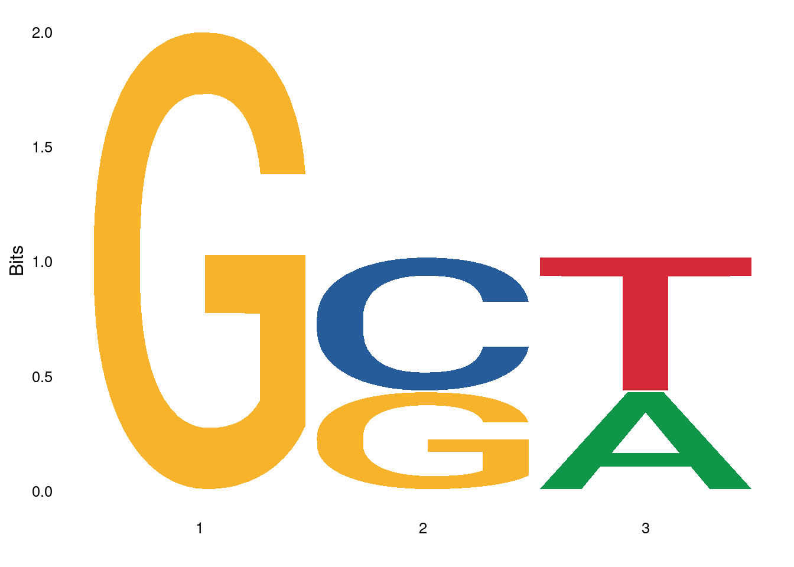
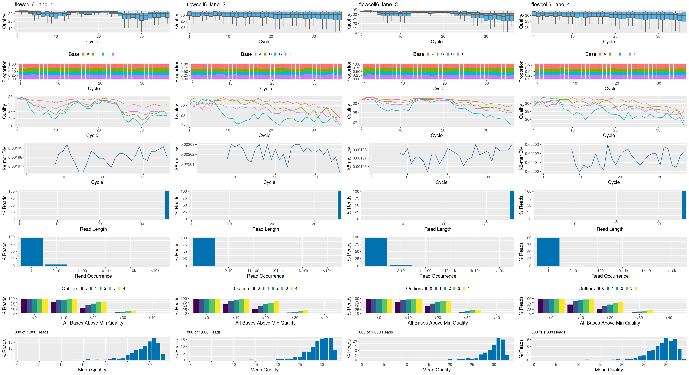

NGS Analysis Basics
Overview
Sequence Analysis in R and Bioconductor
R Base
- Some basic string handling utilities. Wide spectrum of numeric data analysis tools.
Bioconductor
Bioconductor packages provide much more sophisticated string handling utilities for sequence analysis (Lawrence et al. 2013; Huber et al. 2015).
- Biostrings: general sequence analysis environment
- ShortRead: pipeline for short read data
- IRanges: low-level infrastructure for range data
- GenomicRanges: high-level infrastructure for range data
- GenomicFeatures: managing transcript centric annotations
- GenomicAlignments: handling short genomic alignments
-
Rsamtools: interface to
samtools,bcftoolsandtabix - BSgenome: genome annotation data
- biomaRt: interface to BioMart annotations
- rtracklayer: Annotation imports, interface to online genome browsers
- HelloRanges: Bedtools semantics in Bioc’s Ranges infrastructure
Package Requirements
Several Bioconductor packages are required for this tutorial. To install them, execute the following lines in the R console. Please also make sure that you have a recent R version installed on your system. R versions 4.0.x or higher are recommended.
Please do not run this install on the HPCC unless you want to reinstall some of these packages in your own user account.
Strings in R Base
Basic String Matching and Parsing
String matching
Generate sample sequence data set
String searching with regular expression support
Searches myseq for first match of pattern “AT”
[1] 1 1 7[1] 2 2 2Searches myseq for all matches of pattern “AT”
[1] 1 9[1] 2 2String substitution with regular expression support
Positional parsing
Random Sequence Generation
Random DNA sequences of any length
Count identical sequences
Extract reads from reference
Note: this requires the Biostrings package.
15000-letter DNAString object
seq: CTTGGTTGCAAGAAAAGTGCGGAAGGTAGTAGTCGTTCTTGGTTCTACATGGGCTATATAGGTCGGGTCCTGTGCTTAAAATACTATCTAATCCACGTATACTCAC...TCCTGTTAGTCCTGCCCAGTGGATTCTTTTGGTAAACTCTAGTTGACACACGGGTCAGGAGATCGGAACAACACGCCGATACTCGACGTGATGCAGGTTAACTATGSequences in Bioconductor
Important Data Objects of Biostrings
XString for single sequence
-
DNAString: for DNA -
RNAString: for RNA -
AAString: for amino acid -
BString: for any string
XStringSet for many sequences
-
DNAStringSet: for DNA -
RNAStringSet: for RNA -
AAStringSet: for amino acid -
BStringSet: for any string
QualityScaleXStringSet for sequences with quality data
-
QualityScaledDNAStringSet: for DNA -
QualityScaledRNAStringSet: for RNA -
QualityScaledAAStringSet: for amino acid -
QualityScaledBStringSet: for any string
Sequence Import and Export
Download the following sequences to your current working directory and then import them into R: https://ftp.ncbi.nlm.nih.gov/genomes/archive/old_genbank/Bacteria/Halobacterium_sp_uid217/AE004437.ffn
dir.create("data", showWarnings = FALSE)
# system("wget https://ftp.ncbi.nlm.nih.gov/genomes/archive/old_genbank/Bacteria/Halobacterium_sp_uid217/AE004437.ffn")
download.file("https://ftp.ncbi.nlm.nih.gov/genomes/archive/old_genbank/Bacteria/Halobacterium_sp_uid217/AE004437.ffn", "data/AE004437.ffn")Import FASTA file with readDNAStringSet
DNAStringSet object of length 3:
width seq names
[1] 1206 ATGACTCGGCGGTCTCGTGTCGGTGCCGGCCTCGCAGCCATTGTACTGGCCCTGGCCGCAGTGTCGGCTGCCGCTCCGATTGCCGGGGCGCAG...AGCGGTGGCGGGTTACCGCTGTTCAAGATCGGGGGCGCTGTCGCTGTGATTGCGATCGTCGTCGTCGTTGTTCGACGCTGGCGGAACCCATGA gi|12057215|gb|AE...
[2] 666 ATGAGCATCATCGAACTCGAAGGCGTGGTCAAACGGTACGAAACCGGTGCCGAGACAGTCGAGGCGCTGAAAGGCGTTGACTTCTCGGCGGCG...AACATCGCCGTGGTTGCGATCACTCACGACACGCAACTCGAGGAGTTCTCCGACCGCGCAGTCAACCTCGTCGATGGGGTGTTACACACGTGA gi|12057215|gb|AE...
[3] 1110 ATGGCGTGGCGGAACCTCGGGCGGAACCGCGTGCGGACTGCGCTGGCCGCGCTCGGGATCGTGATCGGTGTGATCTCGATCGCATCGATGGGG...TTCCTGTTCGCGGTCTTCGCCAGCCTGCTCAGCGGGCTCTATCCGGCGTGGAAAGCAGCCAACGATCCGCCCGTCGAGGCGCTCGGCGAATGA gi|12057215|gb|AE...Subset sequences with regular expression on sequence name field
Export subsetted sequences to FASTA file
Now inspect exported sequence file AE004437sub.ffn in a text editor
Working with XString Containers
The XString stores the different types of biosequences in dedicated containers
10-letter DNAString object
seq: GCATAT-TAC4-letter DNAString object
seq: GCATRNA sequences
10-letter RNAString object
seq: GCAUAU-UACProtein sequences
Any type of character strings
Working with XStringSet Containers
XStringSet containers allow to store many biosequences in one object
DNAStringSet object of length 2:
width seq names
[1] 9 GCATATTAC seq1
[2] 9 AATCGATCC seq2Important utilities for XStringSet containers
[1] 9 9 9d <- dset[[1]] # The [[ subsetting operator returns a single entry as XString object
dset2 <- c(dset, dset) # Appends/concatenates two XStringSet objects
dsetchar <- as.character(dset) # Converts XStringSet to named vector
dsetone <- unlist(dset) # Collapses many sequences to a single one stored in a DNAString containerSequence subsetting by positions:
Multiple Alignment Class
The XMultipleAlignment class stores the different types of multiple sequence alignments:
DNAMultipleAlignment with 8 rows and 2343 columns
aln names
[1] -----TCCCGTCTCCGCAGCAAAAAAGTTTGAGTCGCCGCTGCCGGGTTGCCAGCGGAGTCGCGCGTCGGGAGCTACGTAGGGCAGAGAAGTCA-T...GAAGAGTTATCTCTTATTCTGAATT--AAATTAAGC--ATTTGTTTTATTGCAGTAAAGTTTGTCCAAACTCACAATTAAAAAAAAAAAAAAAAA gi|84452153|ref|N...
[2] ---------------------------------------------------------------------------------------------A-T...----------------------------------------------------------------------------------------------- gi|208431713|ref|...
[3] -----------------------------------------------------------------------------------GAGAGAAGTCA-T...----------------------------------------------------------------------------------------------- gi|118601823|ref|...
[4] ----------------------AAAAGTTGGAGTCTTCGCTTGAGAGTTGCCAGCGGAGTCGCGCGCCGACAGCTACGCGGCGCAGA-AAGTCA-T...GAAGAGTTATTTCTTATCTCTTACTCTGAATTAAATTAAAATATTTTATTGCAGT---------------------------------------- gi|114326503|ref|...
[5] ---------------------------------------------------------------------------------------------A-T...GAAGAGTTATTTCTTATCTCATACTCTGAATTAAATTAAAATGTTTTATTGCAGTAAA------------------------------------- gi|119220589|ref|...
[6] ---------------------------------------------------------------------------------------------A-T...----------------------------------------------------------------------------------------------- gi|148540149|ref|...
[7] --------------CGGCTCCGCAGCGCCTCACTCGCGCAGTCCCCGCGCAGGGCCGGGCAGAGGCGCACGCAGCTCCCCGGGCGGCCCCGCTC-C...----------------------------------------------------------------------------------------------- gi|45383056|ref|N...
[8] GGGGGAGACTTCAGAAGTTGTTGTCCTCTCCGCTGATAACAGTTGAGATGCGCATATTATTATTACCTTTAGGACAAGTTGAATGTGTTCGTCAAC...----------------------------------------------------------------------------------------------- gi|213515133|ref|...Basic Sequence Manipulations
Reverse and Complement
DNAStringSet object of length 2:
width seq
[1] 17 TCGAGTCTACGAATTGA
[2] 15 TGGCAAGAGATCATADNAStringSet object of length 2:
width seq
[1] 17 TCAATTCGTAGACTCGA
[2] 15 TATGATCTCTTGCCADNAStringSet object of length 2:
width seq
[1] 17 AGTTAAGCATCTGAGCT
[2] 15 ATACTAGAGAACGGTTranslate DNA into Protein
Pattern Matching
Pattern matching with mismatches
Find pattern matches in reference
Count only the corresponding matches
Count matches in many sequences
Results shown in DNAStringSet object
Return a consensus matrix for query and hits
[,1] [,2] [,3] [,4] [,5] [,6]
A 3 0 0 0 0 0
C 1 1 0 0 0 0
G 0 0 4 4 1 4
T 0 3 0 0 3 0Find all pattern matches in reference
MIndex object of length 2058
$`gi|12057215|gb|AE004437.1|:248-1453 Halobacterium sp. NRC-1, complete genome`
IRanges object with 3 ranges and 0 metadata columns:
start end width
<integer> <integer> <integer>
[1] 1 6 6
[2] 383 388 6
[3] 928 933 6
$`gi|12057215|gb|AE004437.1|:1450-2115 Halobacterium sp. NRC-1, complete genome`
IRanges object with 0 ranges and 0 metadata columns:
start end width
<integer> <integer> <integer>
$`gi|12057215|gb|AE004437.1|:2145-3254 Halobacterium sp. NRC-1, complete genome`
IRanges object with 5 ranges and 0 metadata columns:
start end width
<integer> <integer> <integer>
[1] 1 6 6
[2] 94 99 6
[3] 221 226 6
[4] 535 540 6
[5] 601 606 6
...
<2055 more elements>Views on a 1206-letter DNAString subject
subject: ATGACTCGGCGGTCTCGTGTCGGTGCCGGCCTCGCAGCCATTGTACTGGCCCTGGCCGCAGTGTCGGCTGCCGCTCCGATTGCCGGGGCGCAGTCCGCCGGCAG...CCAACGGCGCGAGCGGTGGCGGGTTACCGCTGTTCAAGATCGGGGGCGCTGTCGCTGTGATTGCGATCGTCGTCGTCGTTGTTCGACGCTGGCGGAACCCATGA
views:
start end width
[1] 1 6 6 [ATGACT]
[2] 383 388 6 [ATGGCA]
[3] 928 933 6 [ATGACT]Return all matches
Pattern matching with regular expression support
DNAStringSet object of length 2:
width seq
[1] 14 ATGCAGACATAGTG
[2] 14 ATGAACATAGATCC[1] 1 1 7[1] 2 2 2[1] 1 9[1] 2 2DNAStringSet object of length 3:
width seq
[1] 14 NNNCAGACATAGTG
[2] 14 NNNAACATAGATCC
[3] 11 GTACAGATCACPWM Viewing and Searching
Plot with seqLogo
Plot with ggseqlogo
The ggseqlogo package (manual) provides many customization options for plotting sequence logos. It also supports various alphabets including sequence logos for amino acid sequences.

Search sequence for PWM matches with score better than min.score
NGS Sequences
Sequence and Quality Data: FASTQ Format
Four lines per sequence:
- ID
- Sequence
- ID
- Base call qualities (Phred scores) as ASCII characters
The following gives an example of 3 Illumina reads in a FASTQ file. The numbers at the beginning of each line are not part of the FASTQ format. They have been added solely for illustration purposes.
1. @SRR038845.3 HWI-EAS038:6:1:0:1938 length=36
2. CAACGAGTTCACACCTTGGCCGACAGGCCCGGGTAA
3. +SRR038845.3 HWI-EAS038:6:1:0:1938 length=36
4. BA@7>B=>:>>7@7@>>9=BAA?;>52;>:9=8.=A
1. @SRR038845.41 HWI-EAS038:6:1:0:1474 length=36
2. CCAATGATTTTTTTCCGTGTTTCAGAATACGGTTAA
3. +SRR038845.41 HWI-EAS038:6:1:0:1474 length=36
4. BCCBA@BB@BBBBAB@B9B@=BABA@A:@693:@B=
1. @SRR038845.53 HWI-EAS038:6:1:1:360 length=36
2. GTTCAAAAAGAACTAAATTGTGTCAATAGAAAACTC
3. +SRR038845.53 HWI-EAS038:6:1:1:360 length=36
4. BBCBBBBBB@@BAB?BBBBCBC>BBBAA8>BBBAA@
Sequence and Quality Data: QualityScaleXStringSet
Phred quality scores are integers from 0-50 that are stored as ASCII characters after adding 33. The basic R functions rawToChar and charToRaw can be used to interconvert among their representations.
Phred score interconversion
[1] "\"#$%&'()*"[1] 1 2 3 4 5 6 7 8 9Construct QualityScaledDNAStringSet from scratch
dset <- DNAStringSet(sapply(1:100, function(x) paste(sample(c("A","T","G","C"), 20, replace=T), collapse=""))) # Creates random sample sequence.
myqlist <- lapply(1:100, function(x) sample(1:40, 20, replace=T)) # Creates random Phred score list.
myqual <- sapply(myqlist, function(x) toString(PhredQuality(x))) # Converts integer scores into ASCII characters.
myqual <- PhredQuality(myqual) # Converts to a PhredQuality object.
dsetq1 <- QualityScaledDNAStringSet(dset, myqual) # Combines DNAStringSet and quality data in QualityScaledDNAStringSet object.
dsetq1[1:2] A QualityScaledDNAStringSet instance containing:
DNAStringSet object of length 2:
width seq
[1] 20 CGCCAAGGTGCGCACCCCGT
[2] 20 CTATGCCGTAAGTAATTGCA
PhredQuality object of length 2:
width seq
[1] 20 7F-/*)I=>4@(7B#&4E1&
[2] 20 >C#;>"'0,HAGD$%C:/E,Processing FASTQ Files with ShortRead
The following explains the basic usage of ShortReadQ objects. To make the sample code work, download and unzip this file to your current working directory. The following code performs the download for you.
Important utilities for accessing FASTQ files
class: ShortReadQ
length: 1000 reads; width: 36 cyclesSRR038845.fastq SRR038846.fastq SRR038848.fastq SRR038850.fastq
1000 1000 1000 1000 BStringSet object of length 1:
width seq
[1] 43 SRR038845.3 HWI-EAS038:6:1:0:1938 length=36DNAStringSet object of length 1:
width seq
[1] 36 CAACGAGTTCACACCTTGGCCGACAGGCCCGGGTAAclass: FastqQuality
quality:
BStringSet object of length 1:
width seq
[1] 36 BA@7>B=>:>>7@7@>>9=BAA?;>52;>:9=8.=A [,1] [,2] [,3] [,4] [,5] [,6] [,7] [,8] [,9] [,10] [,11] [,12]
[1,] 33 32 31 22 29 33 28 29 25 29 29 22
[2,] 33 34 34 33 32 31 33 33 31 33 33 33
[3,] 33 33 34 33 33 33 33 33 33 31 31 33
[4,] 33 33 33 33 31 33 28 31 28 32 33 33class: ShortReadQ
length: 1000 reads; width: 36 cyclesFASTQ Quality Reports
Using systemPipeR
The following seeFastq and seeFastqPlot functions generate and plot a series of useful quality statistics for a set of FASTQ files.

Handles many samples in one PDF file. For more details see here
Using ShortRead
The ShortRead package contains several FASTQ quality reporting functions.
sp <- SolexaPath(system.file('extdata', package='ShortRead'))
fl <- file.path(analysisPath(sp), "s_1_sequence.txt")
fls <- c(fl, fl)
coll <- QACollate(QAFastqSource(fls), QAReadQuality(), QAAdapterContamination(),
QANucleotideUse(), QAQualityUse(), QASequenceUse(), QAFrequentSequence(n=10),
QANucleotideByCycle(), QAQualityByCycle())
x <- qa2(coll, verbose=TRUE)
res <- report(x)
if(interactive())
browseURL(res) Filtering and Trimming FASTQ Files with ShortRead
Adaptor trimming
DNAStringSet object of length 2:
width seq
[1] 36 CAACGAGTTCACACCTTGGCCGACAGGCCCGGGTAA
[2] 36 CCAATGATTTTTTTCCGTGTTTCAGAATACGGTTAADNAStringSet object of length 2:
width seq
[1] 26 CAACGAGTTCACACCTTGGCCGACAG
[2] 36 CCAATGATTTTTTTCCGTGTTTCAGAATACGGTTAARead counting and duplicate removal
Trimming low quality tails
Removal of reads with Phred scores below a threshold value
Removal of reads with x Ns and/or low complexity segments
Memory Efficient FASTQ Processing
Streaming through FASTQ files with FastqStreamer and random sampling reads with FastqSampler
Streaming through a FASTQ file while applying filtering/trimming functions and writing the results to a new file here SRR038845.fastq_sub in data directory.
Range Operations
Important Data Objects for Range Operations
-
IRanges: stores range data only (IRanges library) -
GRanges: stores ranges and annotations (GenomicRanges library) -
GRangesList: list version of GRanges container (GenomicRanges library)
Range Data Are Stored in IRanges and GRanges Containers
Construct GRanges Object
The following works with information that relates to GFF/GTF file format. The defintions of the GFF/GTF file format are here.
library(GenomicRanges); library(rtracklayer)
gr <- GRanges(seqnames = Rle(c("chr1", "chr2", "chr1", "chr3"), c(1, 3, 2, 4)), ranges = IRanges(1:10, end = 7:16, names = head(letters, 10)), strand = Rle(strand(c("-", "+", "*", "+", "-")), c(1, 2, 2, 3, 2)), score = 1:10, GC = seq(1, 0, length = 10)) # Example of creating a GRanges object with its constructor function.Import GFF into GRanges Object
gff <- import.gff("https://cluster.hpcc.ucr.edu/~tgirke/Documents/R_BioCond/Samples/gff3.gff") # Imports a simplified GFF3 genome annotation file.
seqlengths(gff) <- end(ranges(gff[which(values(gff)[,"type"]=="chromosome"),]))
names(gff) <- 1:length(gff) # Assigns names to corresponding slot
gff[1:4,]GRanges object with 4 ranges and 10 metadata columns:
seqnames ranges strand | source type score phase ID Name Note Parent Index Derives_from
<Rle> <IRanges> <Rle> | <factor> <factor> <numeric> <integer> <character> <character> <CharacterList> <CharacterList> <character> <character>
1 Chr1 1-30427671 + | TAIR10 chromosome NA <NA> Chr1 Chr1 <NA> <NA>
2 Chr1 3631-5899 + | TAIR10 gene NA <NA> AT1G01010 AT1G01010 protein_coding_gene <NA> <NA>
3 Chr1 3631-5899 + | TAIR10 mRNA NA <NA> AT1G01010.1 AT1G01010.1 AT1G01010 1 <NA>
4 Chr1 3760-5630 + | TAIR10 protein NA <NA> AT1G01010.1-Protein AT1G01010.1 <NA> AT1G01010.1
-------
seqinfo: 7 sequences from an unspecified genomeSeqinfo object with 7 sequences from an unspecified genome:
seqnames seqlengths isCircular genome
Chr1 30427671 NA <NA>
Chr2 19698289 NA <NA>
Chr3 23459830 NA <NA>
Chr4 18585056 NA <NA>
Chr5 26975502 NA <NA>
ChrC 154478 NA <NA>
ChrM 366924 NA <NA>Coerce GRanges object to data.frame
Utilities for Range Containers
Accessor and subsetting methods for GRanges objects
Subsetting and replacement
GRanges object with 4 ranges and 10 metadata columns:
seqnames ranges strand | source type score phase ID Name Note Parent Index Derives_from
<Rle> <IRanges> <Rle> | <factor> <factor> <numeric> <integer> <character> <character> <CharacterList> <CharacterList> <character> <character>
1 Chr1 1-30427671 + | TAIR10 chromosome NA <NA> Chr1 Chr1 <NA> <NA>
2 Chr1 3631-5899 + | TAIR10 gene NA <NA> AT1G01010 AT1G01010 protein_coding_gene <NA> <NA>
3 Chr1 3631-5899 + | TAIR10 mRNA NA <NA> AT1G01010.1 AT1G01010.1 AT1G01010 1 <NA>
4 Chr1 3760-5630 + | TAIR10 protein NA <NA> AT1G01010.1-Protein AT1G01010.1 <NA> AT1G01010.1
-------
seqinfo: 7 sequences from an unspecified genomeGRanges object with 4 ranges and 2 metadata columns:
seqnames ranges strand | type ID
<Rle> <IRanges> <Rle> | <factor> <character>
1 Chr1 1-30427671 + | chromosome Chr1
2 Chr1 3631-5899 + | gene AT1G01010
3 Chr1 3631-5899 + | mRNA AT1G01010.1
4 Chr1 3760-5630 + | protein AT1G01010.1-Protein
-------
seqinfo: 7 sequences from an unspecified genomeGRanges objects can be concatenated with the c function
GRanges object with 4 ranges and 10 metadata columns:
seqnames ranges strand | source type score phase ID Name Note Parent Index Derives_from
<Rle> <IRanges> <Rle> | <factor> <factor> <numeric> <integer> <character> <character> <CharacterList> <CharacterList> <character> <character>
1 Chr1 1-30427671 + | TAIR10 chromosome NA <NA> Chr1 Chr1 <NA> <NA>
2 Chr1 3631-5899 + | TAIR10 mRNA NA <NA> AT1G01010.1 AT1G01010.1 AT1G01010 1 <NA>
401 Chr5 5516-5769 - | TAIR10 protein NA <NA> AT5G01015.2-Protein AT5G01015.2 <NA> AT5G01015.2
402 Chr5 5770-5801 - | TAIR10 five_prime_UTR NA <NA> <NA> <NA> AT5G01015.2 <NA> <NA>
-------
seqinfo: 7 sequences from an unspecified genomeAcessor functions
factor-Rle of length 449 with 7 runs
Lengths: 72 22 38 118 172 13 14
Values : Chr1 Chr2 Chr3 Chr4 Chr5 ChrC ChrM
Levels(7): Chr1 Chr2 Chr3 Chr4 Chr5 ChrC ChrMIRanges object with 449 ranges and 0 metadata columns:
start end width
<integer> <integer> <integer>
1 1 30427671 30427671
2 3631 5899 2269
3 3631 5899 2269
4 3760 5630 1871
5 3631 3913 283
... ... ... ...
445 11918 12241 324
446 11918 12241 324
447 11918 12241 324
448 11918 12241 324
449 11918 12241 324factor-Rle of length 449 with 13 runs
Lengths: 18 54 28 21 12 117 1 171 1 12 1 8 5
Values : + - + - + - + - + - + - +
Levels(3): + - * Chr1 Chr2 Chr3 Chr4 Chr5 ChrC ChrM
30427671 19698289 23459830 18585056 26975502 154478 366924 [1] 1 3631 3631 3760[1] 30427671 5899 5899 5630[1] 30427671 2269 2269 1871Accessing metadata component
DataFrame with 449 rows and 10 columns
source type score phase ID Name Note Parent Index Derives_from
<factor> <factor> <numeric> <integer> <character> <character> <CharacterList> <CharacterList> <character> <character>
1 TAIR10 chromosome NA NA Chr1 Chr1 NA NA
2 TAIR10 mRNA NA NA AT1G01010.1 AT1G01010.1 AT1G01010 1 NA
3 TAIR10 mRNA NA NA AT1G01010.1 AT1G01010.1 AT1G01010 1 NA
4 TAIR10 protein NA NA AT1G01010.1-Protein AT1G01010.1 NA AT1G01010.1
5 TAIR10 exon NA NA NA NA AT1G01010.1 NA NA
... ... ... ... ... ... ... ... ... ... ...
445 TAIR10 gene NA NA ATMG00030 ATMG00030 protein_coding_gene NA NA
446 TAIR10 mRNA NA NA ATMG00030.1 ATMG00030.1 ATMG00030 1 NA
447 TAIR10 protein NA NA ATMG00030.1-Protein ATMG00030.1 NA ATMG00030.1
448 TAIR10 exon NA NA NA NA ATMG00030.1 NA NA
449 TAIR10 CDS NA 0 NA NA ATMG00030.1,ATMG00030.1-Protein NA NA [1] chromosome mRNA mRNA protein exon five_prime_UTR CDS exon CDS exon CDS exon CDS
[14] exon CDS exon CDS three_prime_UTR gene mRNA
Levels: chromosome gene mRNA protein exon five_prime_UTR CDS three_prime_UTR rRNA tRNAGRanges object with 21 ranges and 10 metadata columns:
seqnames ranges strand | source type score phase ID Name Note Parent Index Derives_from
<Rle> <IRanges> <Rle> | <factor> <factor> <numeric> <integer> <character> <character> <CharacterList> <CharacterList> <character> <character>
19 Chr1 5928-8737 - | TAIR10 gene NA <NA> AT1G01020 AT1G01020 protein_coding_gene <NA> <NA>
64 Chr1 11649-13714 - | TAIR10 gene NA <NA> AT1G01030 AT1G01030 protein_coding_gene <NA> <NA>
74 Chr2 1025-2810 + | TAIR10 gene NA <NA> AT2G01008 AT2G01008 protein_coding_gene <NA> <NA>
84 Chr2 3706-5513 + | TAIR10 gene NA <NA> AT2G01010 AT2G01010 rRNA <NA> <NA>
87 Chr2 5782-5945 + | TAIR10 gene NA <NA> AT2G01020 AT2G01020 rRNA <NA> <NA>
... ... ... ... . ... ... ... ... ... ... ... ... ... ...
427 ChrC 383-1444 - | TAIR10 gene NA <NA> ATCG00020 ATCG00020 protein_coding_gene <NA> <NA>
432 ChrC 1717-4347 - | TAIR10 gene NA <NA> ATCG00030 ATCG00030 tRNA <NA> <NA>
437 ChrM 273-734 - | TAIR10 gene NA <NA> ATMG00010 ATMG00010 protein_coding_gene <NA> <NA>
442 ChrM 8848-11415 - | TAIR10 gene NA <NA> ATMG00020 ATMG00020 rRNA <NA> <NA>
445 ChrM 11918-12241 + | TAIR10 gene NA <NA> ATMG00030 ATMG00030 protein_coding_gene <NA> <NA>
-------
seqinfo: 7 sequences from an unspecified genomeUseful utilities for GRanges objects
Remove chromosome ranges
Erase the strand information
Collapses overlapping ranges to continuous ranges. To ignore strand information, include argument ignore.strand=TRUE.
GRanges object with 22 ranges and 0 metadata columns:
seqnames ranges strand
<Rle> <IRanges> <Rle>
[1] Chr1 3631-5899 *
[2] Chr1 5928-8737 *
[3] Chr1 11649-13714 *
[4] Chr2 1025-2810 *
[5] Chr2 3706-5513 *
... ... ... ...
[18] ChrC 383-1444 *
[19] ChrC 1717-4347 *
[20] ChrM 273-734 *
[21] ChrM 8848-11415 *
[22] ChrM 11918-12241 *
-------
seqinfo: 7 sequences from an unspecified genomeReturn uncovered regions
GRanges object with 43 ranges and 0 metadata columns:
seqnames ranges strand
<Rle> <IRanges> <Rle>
[1] Chr1 1-30427671 +
[2] Chr1 1-30427671 -
[3] Chr1 1-3630 *
[4] Chr1 5900-5927 *
[5] Chr1 8738-11648 *
... ... ... ...
[39] ChrM 1-366924 -
[40] ChrM 1-272 *
[41] ChrM 735-8847 *
[42] ChrM 11416-11917 *
[43] ChrM 12242-366924 *
-------
seqinfo: 7 sequences from an unspecified genomeMore intuitive way to get uncovered regions
GRanges object with 29 ranges and 0 metadata columns:
seqnames ranges strand
<Rle> <IRanges> <Rle>
[1] Chr1 1-3630 *
[2] Chr1 5900-5927 *
[3] Chr1 8738-11648 *
[4] Chr1 13715-30427671 *
[5] Chr2 1-1024 *
... ... ... ...
[25] ChrC 4348-154478 *
[26] ChrM 1-272 *
[27] ChrM 735-8847 *
[28] ChrM 11416-11917 *
[29] ChrM 12242-366924 *
-------
seqinfo: 7 sequences from an unspecified genomeReturn disjoint ranges
GRanges object with 211 ranges and 0 metadata columns:
seqnames ranges strand
<Rle> <IRanges> <Rle>
[1] Chr1 3631-3759 *
[2] Chr1 3760-3913 *
[3] Chr1 3914-3995 *
[4] Chr1 3996-4276 *
[5] Chr1 4277-4485 *
... ... ... ...
[207] ChrC 1752-4310 *
[208] ChrC 4311-4347 *
[209] ChrM 273-734 *
[210] ChrM 8848-11415 *
[211] ChrM 11918-12241 *
-------
seqinfo: 7 sequences from an unspecified genomeReturns coverage of ranges
RleList of length 7
$Chr1
integer-Rle of length 30427671 with 45 runs
Lengths: 3630 129 154 82 281 209 120 100 390 78 153 ... 48 106 96 71 2911 215 1077 233 161 380 30413957
Values : 0 4 5 3 5 3 5 3 5 3 5 ... 9 5 9 7 0 4 5 4 2 4 0
$Chr2
integer-Rle of length 19698289 with 14 runs
Lengths: 1024 248 185 53 362 239 699 895 1808 268 164 625 102 19691617
Values : 0 5 3 5 3 5 4 0 3 0 3 0 5 0
$Chr3
integer-Rle of length 23459830 with 29 runs
Lengths: 1652 145 139 111 95 80 60 145 99 163 120 ... 182 477 285 35 289 108 55 155 148 156 23453781
Values : 0 4 5 3 5 3 5 3 5 3 5 ... 0 5 0 4 5 3 5 3 5 4 0
$Chr4
integer-Rle of length 18585056 with 72 runs
Lengths: 1179 357 1358 128 872 212 20 23 23 54 38 ... 179 132 134 84 19 114 36 212 114 74 18571697
Values : 0 5 0 5 3 6 7 9 7 5 7 ... 5 3 5 3 5 3 5 3 5 4 0
$Chr5
integer-Rle of length 26975502 with 64 runs
Lengths: 1222 28 28 109 72 67 45 75 98 36 133 ... 482 421 124 104 137 128 435 76 55 174 26967058
Values : 0 4 7 13 16 10 11 17 9 17 9 ... 5 3 5 3 5 3 5 3 5 4 0
...
<2 more elements>Return the index pairings for overlapping ranges
Hits object with 55 hits and 0 metadata columns:
queryHits subjectHits
<integer> <integer>
[1] 1 1
[2] 1 2
[3] 1 4
[4] 1 3
[5] 2 1
... ... ...
[51] 16 1
[52] 16 2
[53] 16 3
[54] 17 1
[55] 17 2
-------
queryLength: 442 / subjectLength: 4Counts overlapping ranges
2 3 4 5 6 7 8 9 10 11 12 13 14 15 16 17 18 19 20 21 22 23 24 25 26 27 28 29 30 31 32 33 34 35 36 37 38 39 40 41
4 4 4 4 3 4 3 3 3 3 3 3 3 3 3 3 2 0 0 0 0 0 0 0 0 0 0 0 0 0 0 0 0 0 0 0 0 0 0 0 Return only overlapping ranges
GRanges object with 17 ranges and 10 metadata columns:
seqnames ranges strand | source type score phase ID Name Note Parent Index Derives_from
<Rle> <IRanges> <Rle> | <factor> <factor> <numeric> <integer> <character> <character> <CharacterList> <CharacterList> <character> <character>
2 Chr1 3631-5899 * | TAIR10 mRNA NA <NA> AT1G01010.1 AT1G01010.1 AT1G01010 1 <NA>
3 Chr1 3631-5899 * | TAIR10 mRNA NA <NA> AT1G01010.1 AT1G01010.1 AT1G01010 1 <NA>
4 Chr1 3760-5630 * | TAIR10 protein NA <NA> AT1G01010.1-Protein AT1G01010.1 <NA> AT1G01010.1
5 Chr1 3631-3913 * | TAIR10 exon NA <NA> <NA> <NA> AT1G01010.1 <NA> <NA>
6 Chr1 3631-3759 * | TAIR10 five_prime_UTR NA <NA> <NA> <NA> AT1G01010.1 <NA> <NA>
.. ... ... ... . ... ... ... ... ... ... ... ... ... ...
14 Chr1 5174-5326 * | TAIR10 exon NA <NA> <NA> <NA> AT1G01010.1 <NA> <NA>
15 Chr1 5174-5326 * | TAIR10 CDS NA 0 <NA> <NA> AT1G01010.1,AT1G01010.1-Protein <NA> <NA>
16 Chr1 5439-5899 * | TAIR10 exon NA <NA> <NA> <NA> AT1G01010.1 <NA> <NA>
17 Chr1 5439-5630 * | TAIR10 CDS NA 0 <NA> <NA> AT1G01010.1,AT1G01010.1-Protein <NA> <NA>
18 Chr1 5631-5899 * | TAIR10 three_prime_UTR NA <NA> <NA> <NA> AT1G01010.1 <NA> <NA>
-------
seqinfo: 7 sequences from an unspecified genomeGRangesList Objects
GRangesList object of length 7:
$Chr1
GRanges object with 71 ranges and 10 metadata columns:
seqnames ranges strand | source type score phase ID Name Note Parent Index Derives_from
<Rle> <IRanges> <Rle> | <factor> <factor> <numeric> <integer> <character> <character> <CharacterList> <CharacterList> <character> <character>
2 Chr1 3631-5899 * | TAIR10 mRNA NA <NA> AT1G01010.1 AT1G01010.1 AT1G01010 1 <NA>
3 Chr1 3631-5899 * | TAIR10 mRNA NA <NA> AT1G01010.1 AT1G01010.1 AT1G01010 1 <NA>
4 Chr1 3760-5630 * | TAIR10 protein NA <NA> AT1G01010.1-Protein AT1G01010.1 <NA> AT1G01010.1
5 Chr1 3631-3913 * | TAIR10 exon NA <NA> <NA> <NA> AT1G01010.1 <NA> <NA>
6 Chr1 3631-3759 * | TAIR10 five_prime_UTR NA <NA> <NA> <NA> AT1G01010.1 <NA> <NA>
.. ... ... ... . ... ... ... ... ... ... ... ... ... ...
68 Chr1 13335-13714 * | TAIR10 exon NA <NA> <NA> <NA> AT1G01030.1 <NA> <NA>
69 Chr1 12941-13173 * | TAIR10 five_prime_UTR NA <NA> <NA> <NA> AT1G01030.1 <NA> <NA>
70 Chr1 11864-12940 * | TAIR10 CDS NA 0 <NA> <NA> AT1G01030.1,AT1G01030.1-Protein <NA> <NA>
71 Chr1 11649-11863 * | TAIR10 three_prime_UTR NA <NA> <NA> <NA> AT1G01030.1 <NA> <NA>
72 Chr1 11649-13173 * | TAIR10 exon NA <NA> <NA> <NA> AT1G01030.1 <NA> <NA>
-------
seqinfo: 7 sequences from an unspecified genome
...
<6 more elements>GRanges object with 442 ranges and 10 metadata columns:
seqnames ranges strand | source type score phase ID Name Note Parent Index Derives_from
<Rle> <IRanges> <Rle> | <factor> <factor> <numeric> <integer> <character> <character> <CharacterList> <CharacterList> <character> <character>
1.2 Chr1 3631-5899 * | TAIR10 mRNA NA <NA> AT1G01010.1 AT1G01010.1 AT1G01010 1 <NA>
2.3 Chr1 3631-5899 * | TAIR10 mRNA NA <NA> AT1G01010.1 AT1G01010.1 AT1G01010 1 <NA>
3.4 Chr1 3760-5630 * | TAIR10 protein NA <NA> AT1G01010.1-Protein AT1G01010.1 <NA> AT1G01010.1
4.5 Chr1 3631-3913 * | TAIR10 exon NA <NA> <NA> <NA> AT1G01010.1 <NA> <NA>
5.6 Chr1 3631-3759 * | TAIR10 five_prime_UTR NA <NA> <NA> <NA> AT1G01010.1 <NA> <NA>
... ... ... ... . ... ... ... ... ... ... ... ... ... ...
438.445 ChrM 11918-12241 * | TAIR10 gene NA <NA> ATMG00030 ATMG00030 protein_coding_gene <NA> <NA>
439.446 ChrM 11918-12241 * | TAIR10 mRNA NA <NA> ATMG00030.1 ATMG00030.1 ATMG00030 1 <NA>
440.447 ChrM 11918-12241 * | TAIR10 protein NA <NA> ATMG00030.1-Protein ATMG00030.1 <NA> ATMG00030.1
441.448 ChrM 11918-12241 * | TAIR10 exon NA <NA> <NA> <NA> ATMG00030.1 <NA> <NA>
442.449 ChrM 11918-12241 * | TAIR10 CDS NA 0 <NA> <NA> ATMG00030.1,ATMG00030.1-Protein <NA> <NA>
-------
seqinfo: 7 sequences from an unspecified genomeGRangesList object of length 4:
$`1`
GRanges object with 1 range and 1 metadata column:
seqnames ranges strand | type
<Rle> <IRanges> <Rle> | <factor>
2 Chr1 3631-5899 * | mRNA
-------
seqinfo: 7 sequences from an unspecified genome
$`2`
GRanges object with 1 range and 1 metadata column:
seqnames ranges strand | type
<Rle> <IRanges> <Rle> | <factor>
3 Chr1 3631-5899 * | mRNA
-------
seqinfo: 7 sequences from an unspecified genome
$`3`
GRanges object with 1 range and 1 metadata column:
seqnames ranges strand | type
<Rle> <IRanges> <Rle> | <factor>
4 Chr1 3760-5630 * | protein
-------
seqinfo: 7 sequences from an unspecified genome
$`4`
GRanges object with 1 range and 1 metadata column:
seqnames ranges strand | type
<Rle> <IRanges> <Rle> | <factor>
5 Chr1 3631-3913 * | exon
-------
seqinfo: 7 sequences from an unspecified genome$`1`
[1] 1
$`2`
[1] 1
$`3`
[1] 1
$`4`
[1] 1Transcript Ranges
Storing annotation ranges in TranscriptDb databases makes many operations more robust and convenient.
TxDb object:
# Db type: TxDb
# Supporting package: GenomicFeatures
# Data source: TAIR
# Organism: Arabidopsis thaliana
# Taxonomy ID: 3702
# Genome: NA
# Nb of transcripts: 28
# Db created by: txdbmaker package from Bioconductor
# Creation time: 2026-03-23 16:58:13 -0700 (Mon, 23 Mar 2026)
# txdbmaker version at creation time: 1.6.2
# RSQLite version at creation time: 2.4.6
# DBSCHEMAVERSION: 1.2GRanges object with 28 ranges and 2 metadata columns:
seqnames ranges strand | tx_id tx_name
<Rle> <IRanges> <Rle> | <integer> <character>
[1] Chr1 3631-5899 + | 1 AT1G01010.1
[2] Chr1 5928-8737 - | 2 AT1G01020.1
[3] Chr1 6790-8737 - | 3 AT1G01020.2
[4] Chr1 11649-13714 - | 4 AT1G01030.1
[5] Chr2 1025-2810 + | 5 AT2G01008.1
... ... ... ... . ... ...
[24] ChrC 383-1444 - | 24 ATCG00020.1
[25] ChrC 1717-4347 - | 25 ATCG00030.1
[26] ChrM 11918-12241 + | 26 ATMG00030.1
[27] ChrM 273-734 - | 27 ATMG00010.1
[28] ChrM 8848-11415 - | 28 ATMG00020.1
-------
seqinfo: 7 sequences (2 circular) from an unspecified genome; no seqlengthsGRangesList object of length 22:
$AT1G01010
GRanges object with 1 range and 2 metadata columns:
seqnames ranges strand | tx_id tx_name
<Rle> <IRanges> <Rle> | <integer> <character>
[1] Chr1 3631-5899 + | 1 AT1G01010.1
-------
seqinfo: 7 sequences (2 circular) from an unspecified genome; no seqlengths
$AT1G01020
GRanges object with 2 ranges and 2 metadata columns:
seqnames ranges strand | tx_id tx_name
<Rle> <IRanges> <Rle> | <integer> <character>
[1] Chr1 5928-8737 - | 2 AT1G01020.1
[2] Chr1 6790-8737 - | 3 AT1G01020.2
-------
seqinfo: 7 sequences (2 circular) from an unspecified genome; no seqlengths
$AT1G01030
GRanges object with 1 range and 2 metadata columns:
seqnames ranges strand | tx_id tx_name
<Rle> <IRanges> <Rle> | <integer> <character>
[1] Chr1 11649-13714 - | 4 AT1G01030.1
-------
seqinfo: 7 sequences (2 circular) from an unspecified genome; no seqlengths
...
<19 more elements>GRangesList object of length 22:
$AT1G01010
GRanges object with 6 ranges and 2 metadata columns:
seqnames ranges strand | exon_id exon_name
<Rle> <IRanges> <Rle> | <integer> <character>
[1] Chr1 3631-3913 + | 1 <NA>
[2] Chr1 3996-4276 + | 2 <NA>
[3] Chr1 4486-4605 + | 3 <NA>
[4] Chr1 4706-5095 + | 4 <NA>
[5] Chr1 5174-5326 + | 5 <NA>
[6] Chr1 5439-5899 + | 6 <NA>
-------
seqinfo: 7 sequences (2 circular) from an unspecified genome; no seqlengths
$AT1G01020
GRanges object with 12 ranges and 2 metadata columns:
seqnames ranges strand | exon_id exon_name
<Rle> <IRanges> <Rle> | <integer> <character>
[1] Chr1 5928-6263 - | 7 <NA>
[2] Chr1 6437-7069 - | 8 <NA>
[3] Chr1 6790-7069 - | 9 <NA>
[4] Chr1 7157-7232 - | 10 <NA>
[5] Chr1 7157-7450 - | 11 <NA>
... ... ... ... . ... ...
[8] Chr1 7762-7835 - | 14 <NA>
[9] Chr1 7942-7987 - | 15 <NA>
[10] Chr1 8236-8325 - | 16 <NA>
[11] Chr1 8417-8464 - | 17 <NA>
[12] Chr1 8571-8737 - | 18 <NA>
-------
seqinfo: 7 sequences (2 circular) from an unspecified genome; no seqlengths
$AT1G01030
GRanges object with 2 ranges and 2 metadata columns:
seqnames ranges strand | exon_id exon_name
<Rle> <IRanges> <Rle> | <integer> <character>
[1] Chr1 11649-13173 - | 19 <NA>
[2] Chr1 13335-13714 - | 20 <NA>
-------
seqinfo: 7 sequences (2 circular) from an unspecified genome; no seqlengths
...
<19 more elements>
txdb from BioMart
Alternative sources for creating txdb databases are BioMart, Bioc annotation packages, UCSC, etc. The following shows how to create a txdb from BioMart.
The following steps are useful to find out what is availble in BioMart.
listMarts() # Lists BioMart databases
listMarts(host="plants.ensembl.org")
mymart <- useMart("plants_mart", host="plants.ensembl.org") # Select one, here plants_mart
listDatasets(mymart) # List datasets available in the selected BioMart database
mymart <- useMart("plants_mart", dataset="athaliana_eg_gene", host="plants.ensembl.org")
listAttributes(mymart) # List available features
getBM(attributes=c("ensembl_gene_id", "description"), mart=mymart)[1:4,]Efficient Sequence Parsing
getSeq
The following parses all annotation ranges provided by a GRanges object (e.g. gff) from a genome sequence stored in a local file.
gff <- gff[values(gff)$type != "chromosome"] # Remove chromosome ranges
rand <- DNAStringSet(sapply(unique(as.character(seqnames(gff))), function(x) paste(sample(c("A","T","G","C"), 200000, replace=T), collapse="")))
writeXStringSet(DNAStringSet(rand), "./data/test")
getSeq(FaFile("./data/test"), gff)DNAStringSet object of length 442:
width seq names
[1] 2269 TTGCGAATATTTGATGTGCGGAATCCAGGCATAGGCGGCGCGAGTCAGAGCACCATATTGCTCGACGTGAGCATTATAGGTACTCACGGGAA...CTATGAGTGCAGATATATTATATACGTGGATGTATGGGGATTCGACCGCAGGCAGCTAGTTACCTGTCGTCTGAAACTGATGCTGGAGGACA Chr1
[2] 2269 TTGCGAATATTTGATGTGCGGAATCCAGGCATAGGCGGCGCGAGTCAGAGCACCATATTGCTCGACGTGAGCATTATAGGTACTCACGGGAA...CTATGAGTGCAGATATATTATATACGTGGATGTATGGGGATTCGACCGCAGGCAGCTAGTTACCTGTCGTCTGAAACTGATGCTGGAGGACA Chr1
[3] 1871 AGTTACTCCGACGGCGACTGTTAGATGCAGGCCTTCTATCGAACCGCGTTTGCGCATACTCGGCTAGGACCGCGTGACAAGGTCTATGTCAG...TGCCTGACGGTCAGCTTATCTCATCCGGGAAGACCGAGTCCACCTTGGGATCGGGTCCGTCACGCACGTACTGGAACGGCAAGGGGACCACT Chr1
[4] 283 TTGCGAATATTTGATGTGCGGAATCCAGGCATAGGCGGCGCGAGTCAGAGCACCATATTGCTCGACGTGAGCATTATAGGTACTCACGGGAA...GCTAGGACCGCGTGACAAGGTCTATGTCAGGACTACTTCCGCTTGTAAGAATGAGGGGGTCGTTGTGTGCTGCAGCCTGACCCGGTCCGTAC Chr1
[5] 129 TTGCGAATATTTGATGTGCGGAATCCAGGCATAGGCGGCGCGAGTCAGAGCACCATATTGCTCGACGTGAGCATTATAGGTACTCACGGGAAGTAGATCGTCCCCGTGCCCTCTAGACAAGGAGAGTGA Chr1
... ... ...
[438] 324 AAGCTCATGAGCTTTGAGGCCTATGTACAGTGGGTCACGTCTAGACCTGTCACTAGATCTTCCCCACGAGTACTTAGGATCACTTTCGGAGG...CTATTGGCTCCTCTAGGCGCCTTTTATGGTATCTACCGAGAGAGCCGCTCAAAATCTTGCGGAATTATCGCGCAAGGTGGAGGTACGTGGGT ChrM
[439] 324 AAGCTCATGAGCTTTGAGGCCTATGTACAGTGGGTCACGTCTAGACCTGTCACTAGATCTTCCCCACGAGTACTTAGGATCACTTTCGGAGG...CTATTGGCTCCTCTAGGCGCCTTTTATGGTATCTACCGAGAGAGCCGCTCAAAATCTTGCGGAATTATCGCGCAAGGTGGAGGTACGTGGGT ChrM
[440] 324 AAGCTCATGAGCTTTGAGGCCTATGTACAGTGGGTCACGTCTAGACCTGTCACTAGATCTTCCCCACGAGTACTTAGGATCACTTTCGGAGG...CTATTGGCTCCTCTAGGCGCCTTTTATGGTATCTACCGAGAGAGCCGCTCAAAATCTTGCGGAATTATCGCGCAAGGTGGAGGTACGTGGGT ChrM
[441] 324 AAGCTCATGAGCTTTGAGGCCTATGTACAGTGGGTCACGTCTAGACCTGTCACTAGATCTTCCCCACGAGTACTTAGGATCACTTTCGGAGG...CTATTGGCTCCTCTAGGCGCCTTTTATGGTATCTACCGAGAGAGCCGCTCAAAATCTTGCGGAATTATCGCGCAAGGTGGAGGTACGTGGGT ChrM
[442] 324 AAGCTCATGAGCTTTGAGGCCTATGTACAGTGGGTCACGTCTAGACCTGTCACTAGATCTTCCCCACGAGTACTTAGGATCACTTTCGGAGG...CTATTGGCTCCTCTAGGCGCCTTTTATGGTATCTACCGAGAGAGCCGCTCAAAATCTTGCGGAATTATCGCGCAAGGTGGAGGTACGTGGGT ChrMextractTranscriptSeqs
Sequences composed of several ranges, such as transcripts (or CDSs) with several exons, can be parsed with extractTranscriptSeqs. Note: the following expects the genome sequence in a file with path data/test and a valid txdb defining the ranges for that genome.
[1] "data/test.fai"DNAStringSet object of length 28:
width seq names
[1] 1688 TTGCGAATATTTGATGTGCGGAATCCAGGCATAGGCGGCGCGAGTCAGAGCACCATATTGCTCGACGTGAGCATTATAGGTACTCACGGGAAG...CTATGAGTGCAGATATATTATATACGTGGATGTATGGGGATTCGACCGCAGGCAGCTAGTTACCTGTCGTCTGAAACTGATGCTGGAGGACA AT1G01010.1
[2] 1623 ATTTATTGCCTCTCATCTATTTACAGTTAGACCTCTAGCATCCTAAAGATCCAGATTGTTATATTGGCCAAAGTGTCAACCATCAGGCCCACT...ATTAAAAAGTGAACCCTACTACGCTCGGGAGTATCAACCTTTAGTAGTTGCACTTTTTGGGCTTATTATGAACACGTACGCTACGATCCATT AT1G01020.1
[3] 1085 ATTTATTGCCTCTCATCTATTTACAGTTAGACCTCTAGCATCCTAAAGATCCAGATTGTTATATTGGCCAAAGTGTCAACCATCAGGCCCACT...CGAATTCCCGTTTGCCGGCGCCCCGTGATCTGCTGAACCGCGTGTACACCGAGTTACGTTCCAACACTTGCTCTACCCTCCCCGATTTCGTT AT1G01020.2
[4] 1905 ATCACGTGGTAAGGGTGGTCAGTGGTAGAACGGAGGCAGCATGACATGCTGCTCCCACCGCAGACTTCATTCCCTATCTGGTAGACACTTCTA...TCCGATAAGTCTTCGTCAAATTAGAATAAAAGATGCCAGCGACATGGCCTCGGTAGCCATTCAGCTTGACGGCCTCTAATCATATGTCGACG AT1G01030.1
[5] 1239 GCTCCCTAAAATTAGCGTGGCGAGACTAATATGGATTATCTGCCCTGTCCAGATATTACCAGAATATTATCTAGCGGCACATCACTTCGCGAG...GCAACATTACACGGATCGAGTCCTGTTCGTTGACGGATTTACGGCTGTGCGGGTTCCACGGGCCCTGCAAATACAAACTTTTCTCTAGGCCA AT2G01008.1
... ... ...
[24] 1062 CCCTGGTATCGACCGCTTAAGGTGCAAAGTTTGCCACCCCCGACATGCCCGTGCGTCATAGTCTTAAATCAACATTATCCACGCCCAACACAT...GCGCTCTAGCGCTGAGCACGCCTGTAACGGCCCCAGTAAGGGAGGGACGAATGTTTCCGCACATCGCGCGGCGTTACACGGCCCATTTTTAA ATCG00020.1
[25] 72 TAGGACAGTGCTACGACCCAGGGTCTCAGAATCACCATTCGGCCGCGCAAGCGCGTCGATATAGCTCCGGAG ATCG00030.1
[26] 324 AAGCTCATGAGCTTTGAGGCCTATGTACAGTGGGTCACGTCTAGACCTGTCACTAGATCTTCCCCACGAGTACTTAGGATCACTTTCGGAGGA...CTATTGGCTCCTCTAGGCGCCTTTTATGGTATCTACCGAGAGAGCCGCTCAAAATCTTGCGGAATTATCGCGCAAGGTGGAGGTACGTGGGT ATMG00030.1
[27] 462 CAATCTAGGTACATACCTCCAAAGCGTGAGTCGGGTTATTGACATTACCGGTCCTTCACGTCTAAAATGTAACAAAATTCGAGGCTACGCATG...CTGGTCAGTGGTGGAGTGTCCTCATCTTCGCCGCAGCTGGCGCCAATACTTGCCCTCGAACGCGGAGTTAGGGTTAAATCTCGCTTGCCTGT ATMG00010.1
[28] 2568 ATCGTCCGTAGTATGGACGTATTGTATATGTTGGTCGTGATGTAGCCACTGACCAGAATACTATTACGCGCCTTTAGGGCAAGCATACCGAGT...GGGCTGGAGGGAGCCAATCCGCCGAAAGGATGACAGTGAACCGCTGGATTGTGATCGAAGCGGTGTATAGTATAAGCGGATCCCACTGCGCA ATMG00020.1Homework 6
See here.
Session Info
R version 4.5.3 (2026-03-11)
Platform: x86_64-pc-linux-gnu
Running under: Debian GNU/Linux 12 (bookworm)
Matrix products: default
BLAS: /usr/lib/x86_64-linux-gnu/blas/libblas.so.3.11.0
LAPACK: /usr/lib/x86_64-linux-gnu/lapack/liblapack.so.3.11.0 LAPACK version 3.11.0
locale:
[1] LC_CTYPE=en_US.UTF-8 LC_NUMERIC=C LC_TIME=en_US.UTF-8 LC_COLLATE=en_US.UTF-8 LC_MONETARY=en_US.UTF-8 LC_MESSAGES=en_US.UTF-8 LC_PAPER=en_US.UTF-8 LC_NAME=C
[9] LC_ADDRESS=C LC_TELEPHONE=C LC_MEASUREMENT=en_US.UTF-8 LC_IDENTIFICATION=C
time zone: America/Los_Angeles
tzcode source: system (glibc)
attached base packages:
[1] grid stats4 stats graphics grDevices utils datasets methods base
other attached packages:
[1] txdbmaker_1.6.2 GenomicFeatures_1.62.0 AnnotationDbi_1.72.0 rtracklayer_1.70.1 systemPipeR_2.16.3 ShortRead_1.68.0 GenomicAlignments_1.46.0
[8] SummarizedExperiment_1.40.0 Biobase_2.70.0 MatrixGenerics_1.22.0 matrixStats_1.5.0 Rsamtools_2.26.0 GenomicRanges_1.62.1 BiocParallel_1.44.0
[15] ggseqlogo_0.2.2 ggplot2_4.0.2 seqLogo_1.76.0 Biostrings_2.78.0 Seqinfo_1.0.0 XVector_0.50.0 IRanges_2.44.0
[22] S4Vectors_0.48.0 BiocGenerics_0.56.0 generics_0.1.4
loaded via a namespace (and not attached):
[1] DBI_1.2.3 bitops_1.0-9 deldir_2.0-4 httr2_1.2.2 biomaRt_2.66.1 rlang_1.1.7 magrittr_2.0.4 otel_0.2.0 compiler_4.5.3
[10] RSQLite_2.4.6 png_0.1-8 vctrs_0.7.1 stringr_1.6.0 pwalign_1.6.0 pkgconfig_2.0.3 crayon_1.5.3 fastmap_1.2.0 dbplyr_2.5.2
[19] labeling_0.4.3 rmarkdown_2.30 UCSC.utils_1.6.1 bit_4.6.0 xfun_0.56 cachem_1.1.0 cigarillo_1.0.0 GenomeInfoDb_1.46.2 jsonlite_2.0.0
[28] progress_1.2.3 blob_1.3.0 DelayedArray_0.36.0 jpeg_0.1-11 parallel_4.5.3 prettyunits_1.2.0 R6_2.6.1 stringi_1.8.7 RColorBrewer_1.1-3
[37] Rcpp_1.1.1 knitr_1.51 Matrix_1.7-4 tidyselect_1.2.1 dichromat_2.0-0.1 abind_1.4-8 yaml_2.3.12 codetools_0.2-20 hwriter_1.3.2.1
[46] curl_7.0.0 lattice_0.22-9 tibble_3.3.1 withr_3.0.2 KEGGREST_1.50.0 S7_0.2.1 evaluate_1.0.5 BiocFileCache_3.0.0 pillar_1.11.1
[55] filelock_1.0.3 RCurl_1.98-1.17 hms_1.1.4 scales_1.4.0 glue_1.8.0 tools_4.5.3 interp_1.1-6 BiocIO_1.20.0 XML_3.99-0.22
[64] latticeExtra_0.6-31 GenomeInfoDbData_1.2.15 restfulr_0.0.16 cli_3.6.5 rappdirs_0.3.4 S4Arrays_1.10.1 viridisLite_0.4.3 dplyr_1.2.0 gtable_0.3.6
[73] digest_0.6.39 SparseArray_1.10.8 rjson_0.2.23 htmlwidgets_1.6.4 farver_2.1.2 memoise_2.0.1 htmltools_0.5.9 lifecycle_1.0.5 httr_1.4.8
[82] bit64_4.6.0-1